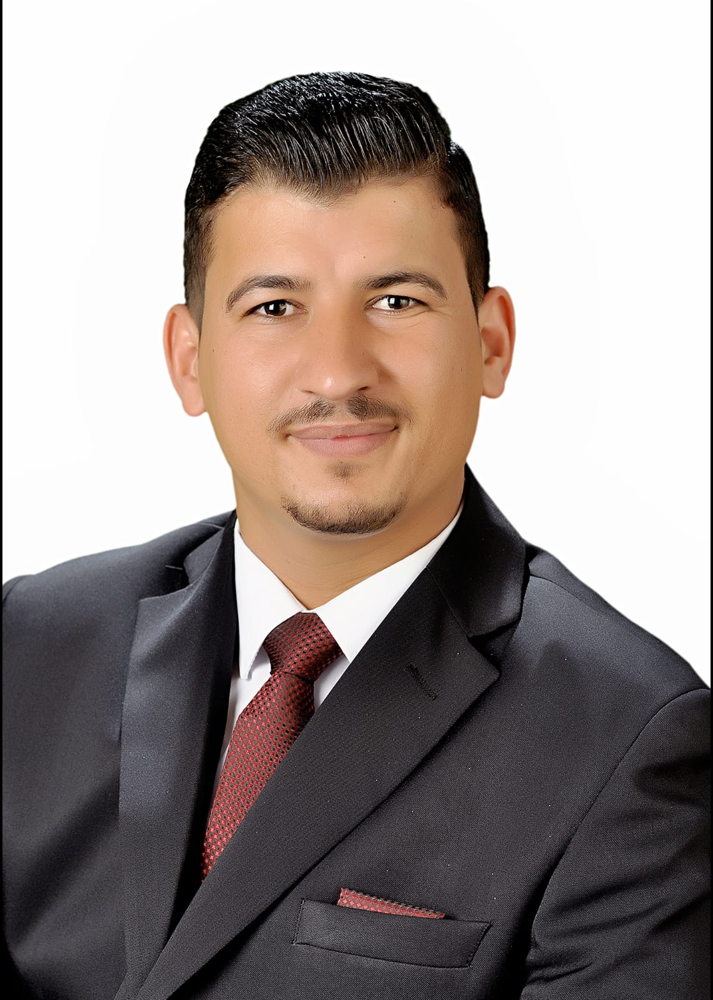

Shadi AlHamidi
Business Management Graduate
Jordan , Zarqa

Business Management Graduate
Jordan , Zarqa
Business Management graduate and top of the university cohort. Passionate about contributing to business administration and organizational growth. Experienced in handling phone inquiries, emails, and social media communications. A punctual problem solver and an efficient multitasker.
BSc in Business Management, Zarqa’a Private University (2018–2022)
Graduated with Excellence GPA
(Online - Mostaql, 2022)
(Online - Mostaql, 2021)
(Online - Amana Store, 2021)